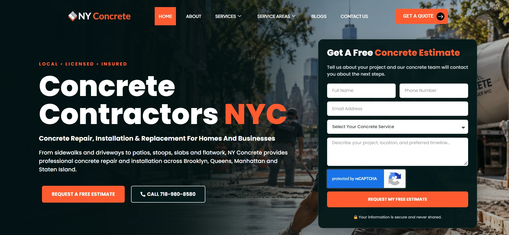
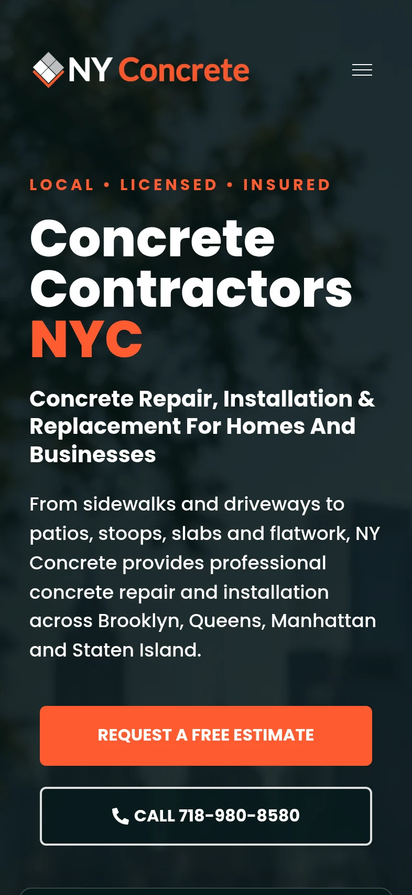
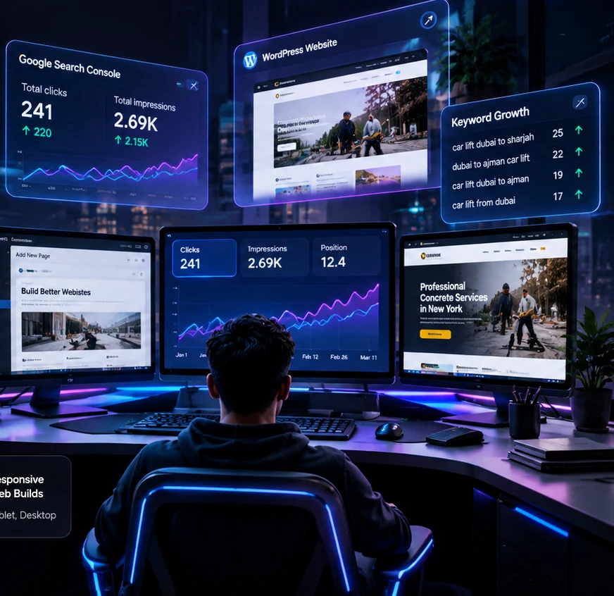
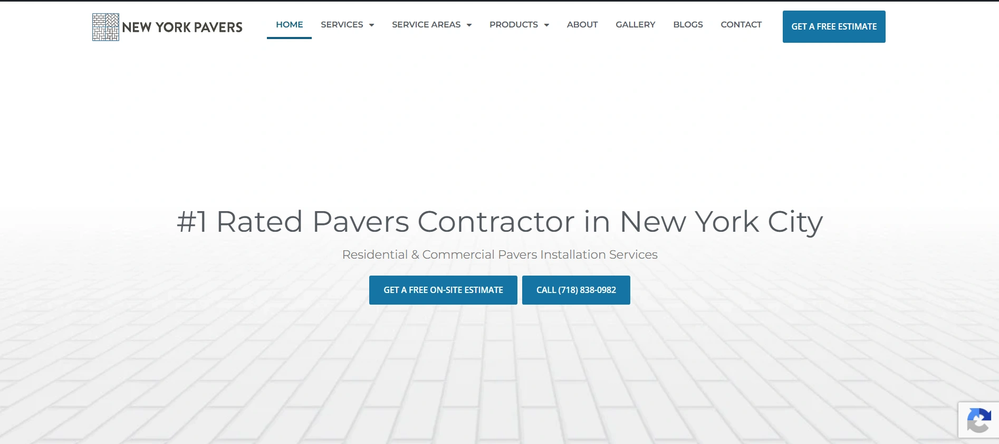
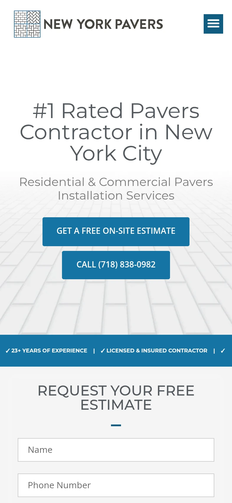
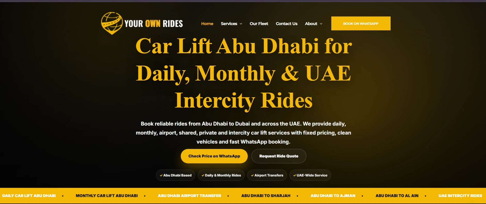
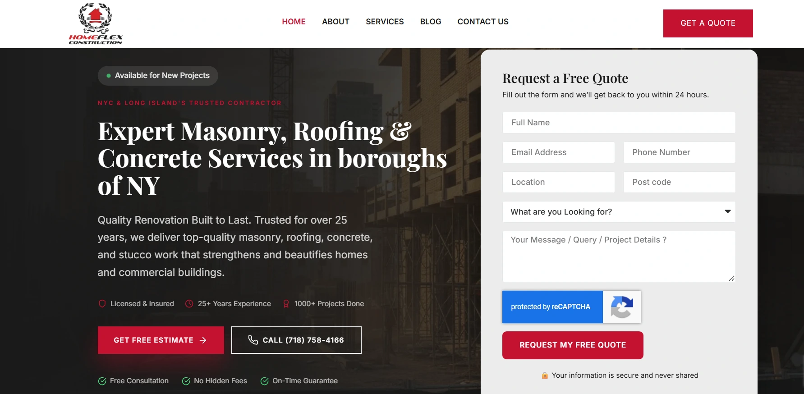
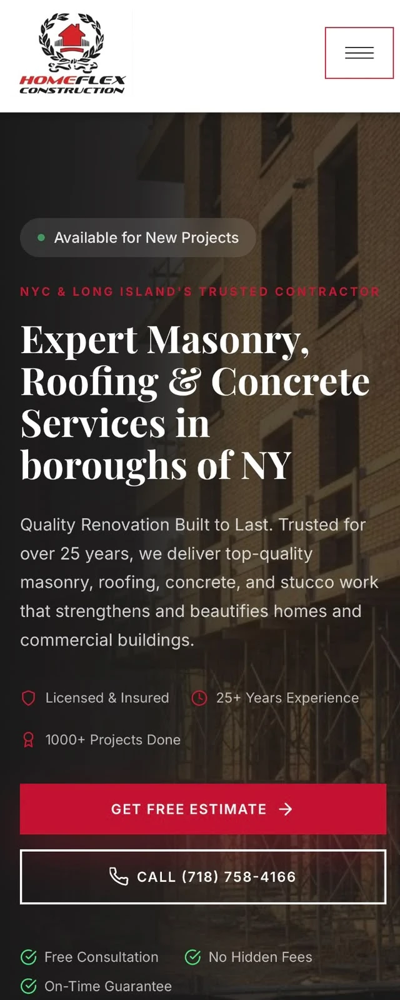

01 / 04CONSTRUCTION · WORDPRESS + SEO
NY Concrete
WordPress pages, service-focused content structure, local SEO and conversion-oriented website improvements.
I help businesses improve their websites through WordPress development, technical SEO, content optimization, and search-focused execution — backed by real pages, real screenshots, and real performance evidence.

BUILD · OPTIMIZE · PROVEActual Google Search Console data from Your Own Rides, comparing the latest three months in the supplied report with the previous three months. Open the original screenshots to inspect the source.
These comparisons document observed changes in Google Search Console, not proof that any single SEO action exclusively caused the results.
Finished desktop and mobile website examples from businesses I've worked with, presented alongside the actual live sites.


01 / 04WordPress pages, service-focused content structure, local SEO and conversion-oriented website improvements.


02 / 04Service and neighborhood page optimization, website structure, internal linking, and practical user-experience improvements.

03 / 04Responsive Elementor layouts, search-focused page structure and an evidence-rich organic search performance case study.


04 / 04Part of my US-focused construction and home-service website SEO portfolio, with published site visuals and an active website.
Eight real, live URLs across NY Concrete and NY Pavers. Each link opens the actual page, not an invented mockup.
A closer look at Your Own Rides, showing the actual landing-page comparisons and search queries behind the website-wide results.
I'm Muhammad Tahir, an SEO Specialist and WordPress Developer with over two years of hands-on SEO experience. I work on technical and local SEO, website content, WordPress page improvements, and search performance reporting.
My current remote work focuses on US construction and home-service websites. I combine practical implementation with search data to identify issues, improve pages, and communicate progress clearly.
A practical combination of web implementation, search visibility and content optimization for business websites.
Responsive pages, Elementor customization, content management, and user-focused layout improvements.
Indexation, sitemaps, redirects, crawl issues, technical reviews and practical remediation priorities.
Metadata, headings, keyword mapping, search intent, internal links, and structured page content.
Location relevance, service-area content, Google Business Profile support, and local search visibility.
Search Console insights, technical review, competitor analysis and prioritized improvement plans.
Stronger page clarity, trust content, CTAs, search alignment, and responsive usability improvements.
Have a website that needs a stronger technical or search foundation?
Discuss Your Project ↗Platforms I use for SEO analysis, WordPress execution, measurement and optimization. Proficiency labels reflect the information in my CV.
Search insights matter most when they lead to practical website improvements. I combine SEO reporting with hands-on WordPress work.
Additional provided logos (such as Git, GitHub, Ahrefs, Sass and GTM) can be added once your proficiency with those tools is confirmed.
Selected roles and project work, based on the experience described in my CV.
Day-to-day WordPress SEO execution across New York construction and home-service websites.
Website building and optimization for a ride-service business.
Structured research and data validation experience supporting a detailed, accuracy-focused approach.
Intermediate in Computer Science · BS Data Science coursework (studies paused), as stated in my CV.
From the first conversation to implementation and reporting, each stage is organized around a practical project outcome.
Understand your goals, audience and website challenges.
Review search data, site structure and technical issues.
Create clear deliverables and choose the highest-value work.
Implement WordPress, SEO, content and UX improvements.
Check responsiveness, functionality and technical quality.
Review relevant results and identify next steps.
Real project links, genuine screenshots and a clear working process are more convincing than exaggerated promises.
I can identify search and website problems, implement practical WordPress improvements, and use available analytics to review the work.
Published pages and finished desktop/mobile screenshots.
Authentic performance, pages, and query screenshots.
Honest descriptions of my work, without fabricated claims.
Research, implementation, quality checks and reporting.
Need WordPress development, technical SEO improvements, or help with an existing website? Tell me what you're working on.